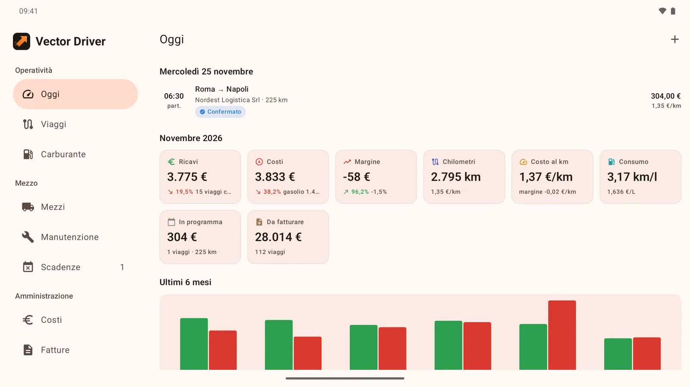
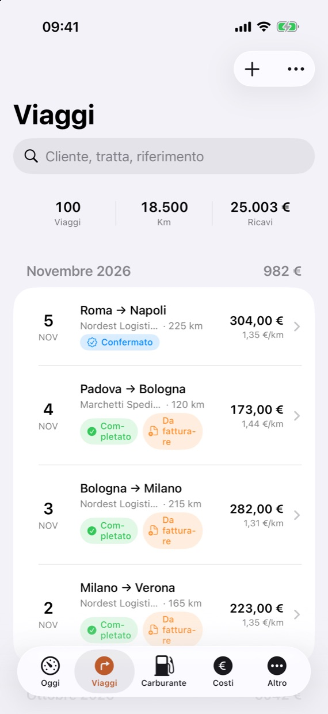
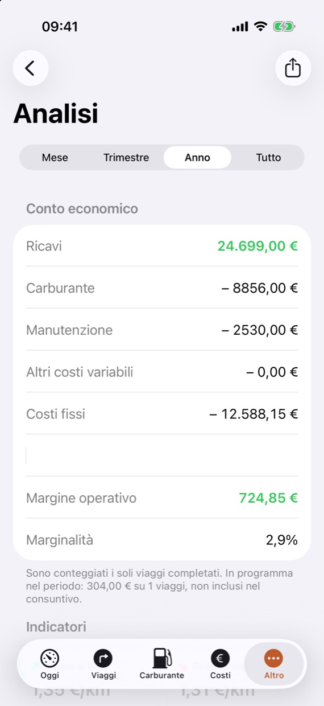
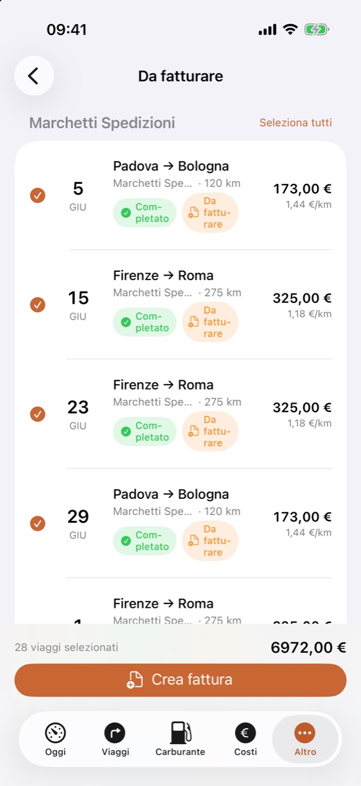
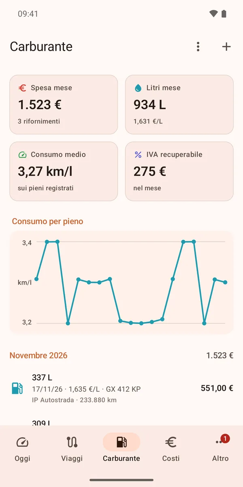
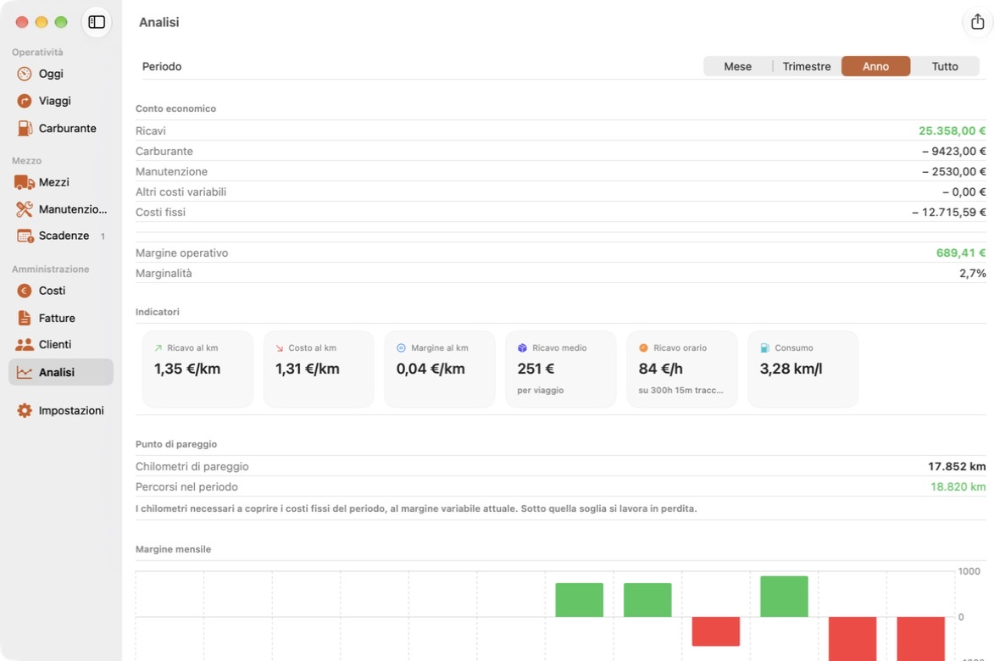
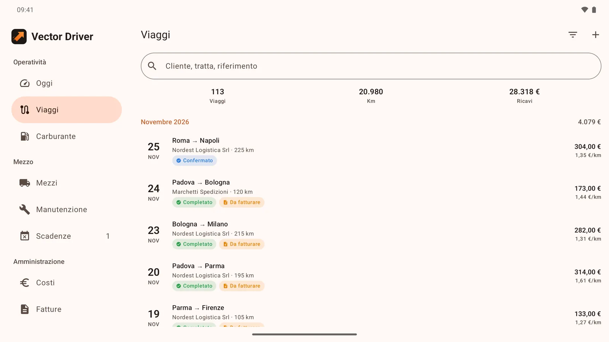

Sai quanto ti resta.
Viaggio per viaggio.
Per chi guida per lavoro: viaggi, pieni, costi e fattura elettronica. Su iPhone, iPad, Mac e Android.
Gratis per sette giorni, senza registrazione.


Tablet Android e iPhone · dati di esempio
I conti veri, non a occhio.
Da ogni viaggio e da ogni pieno l'app ricava il conto economico del mese, del trimestre o dell'anno: ricavi, carburante, manutenzione, costi fissi e margine. Ricavo e costo al chilometro, punto di pareggio e una stima di quanto accantonare per imposte e contributi.

Dal viaggio alla fattura,
senza ricopiare niente.
Segni il viaggio
Tratta, committente, chilometri e nolo, appena scarichi.
Scegli cosa fatturare
L'app ti mostra i viaggi completati e non ancora fatturati di ogni committente.
La fattura è pronta
Il file XML FatturaPA da caricare sul tuo canale verso lo SdI e il PDF da mandare al cliente.

L'app genera il file ma non lo trasmette: lo carichi tu sul tuo canale, che sia un intermediario, il portale dell'Agenzia delle Entrate o la PEC.

Il consumo vero del tuo mezzo.
Registri il pieno con odometro e foto dello scontrino: l'app legge da sola litri, prezzo e totale. Da due pieni consecutivi calcola i km/l reali e ne segue l'andamento, così ti accorgi subito se qualcosa non va e sai quanta IVA sul gasolio recuperi.
In cabina sul telefono,
la sera sullo schermo grande.
Segni il viaggio appena scarichi; conti e fatture li riprendi sul tablet o sul computer.


- iPhone, iPad e Mac
- Gli stessi dati su ogni dispositivo, con il tuo iCloud.
- Telefoni e tablet Android
- Gli stessi dati su ogni dispositivo, con il tuo Google Drive.
- Da iPhone ad Android, e ritorno
- Il backup è lo stesso file: lo salvi da una parte e lo ripristini dall'altra.
E tutto il resto.
Il mezzo
- Scadenze
- Revisione, assicurazione, bollo, CQC, visita medica: un promemoria prima e uno il giorno stesso.
- Manutenzione
- Tagliandi, gomme e riparazioni, con il prossimo intervento a data o a chilometri.
L'ufficio
- Clienti
- Tariffa, termini di pagamento, fatturato e resa media di ogni committente.
- Costi
- Uscite una tantum e costi fissi ricorrenti, con la quota mensile di ciascuno.
- Esportazioni
- Ogni elenco in CSV pronto per Excel, da passare al commercialista.
- Backup
- L'intero archivio in un file, da salvare dove vuoi e ripristinare quando serve.
I tuoi dati restano tuoi.
Nessun account da creare, nessun nostro server, nessuna pubblicità né tracciamento. I dati stanno sul tuo dispositivo e, se vuoi, nel tuo iCloud o nel tuo Google Drive, dove noi non possiamo leggerli.
Provalo sette giorni, gratis.
L'app è completa dal primo giorno, senza registrazione e senza carta. L'unica cosa riservata agli abbonati è l'emissione dell'XML FatturaPA.
Finita la prova scegli l'abbonamento mensile o annuale direttamente nell'app: il prezzo nella tua valuta lo vedi lì e sullo store prima di pagare. Rinnovo automatico, gestito da Apple o da Google. I tuoi dati restano anche senza abbonamento, e il backup si può sempre esportare.
Hai un'azienda con più autisti?
Per un'azienda di autotrasporto c'è Vector, il gestionale per pianificazione dei viaggi, flotta, autisti, subvettori, carburante, fatturazione e cash flow. Non si scarica: si chiede per email.
Domande su Vector Driver? Trovi le risposte nella pagina di assistenza, o scrivi a support@lucaporta.dev.